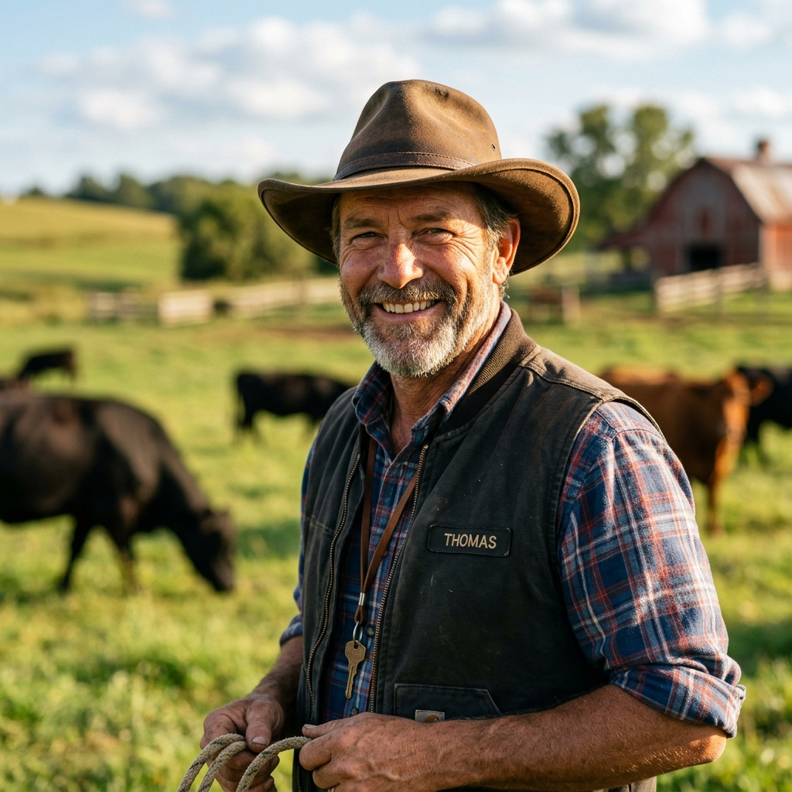

Preventive care, emergency response, and herd health management. We bring the clinic to you.
Fill out the form below and we'll get back to you shortly.
Our comprehensive preventive care programs are designed to keep your animals healthy year-round.
A seamless, professional care experience delivered straight to your stable or pasture.
Request a visit online or call our dedicated line to outline your animal's wellness or diagnostic needs.
Our vet units are stocked with specialized diagnostic and medical gear customized for your horse or herd.
Dr. Cole or Dr. Vance conducts thorough exams, diagnostics, or treatments directly on your property.
Receive immediate electronic visit reports, medication directions, and a clear follow-up plan.
We believe that high-quality care shouldn't require transporting stressed or injured animals. Our custom ambulatory rigs are loaded with advanced clinical technologies.
Instant bone & skeletal imaging on farm computer monitors.
High-resolution soft tissue diagnostics and reproduction scans.
On-site blood work analysis with rapid panel reports.
Advanced power floating tools and corrective oral surgery.
Dedicated practitioners combining decades of clinical excellence with deep agricultural roots.
 Equine Sports Med
Equine Sports Med
Dr. Cole holds over 12 years of specialized equine expertise, focusing on lameness diagnostics, joint therapies, and advanced reproductive services.
Read Bio & Credentials Herd Health & Bovine
Herd Health & Bovine
Dr. Vance specializes in bovine herd health, dairy production economics, and epidemiology, working with beef and dairy producers across the region.
Read Bio & CredentialsAnswers to common questions regarding mobile visits, scheduling, and emergency dispatch.
We service farms, stables, and agricultural facilities within a 50-mile radius of our main clinic base. If you have a larger herd that requires routine checkups or special consultations outside this zone, please call us to discuss custom arrangements.
To ensure a safe and efficient visit, please have your animals halter-broken (for horses/ruminants) and confined in a secure stall, dry pen, or squeeze chute before our arrival. Access to a clean, covered workspace, fresh water, and a standard electrical outlet is highly appreciated.
While our round-the-clock emergency team prioritizes existing clients to maintain scheduling continuity, we do extend emergency dispatch to non-established clients when our duty mobile units have open capacity. Emergency dispatch fees apply.
Payment is due at the time of clinical service. We accept cash, personal/farm checks, and all major credit cards. For commercial livestock accounts or structured seasonal breeding work, custom invoicing contracts can be established upon credit review.
Expert guides and clinical articles written by our veterinarians to support your farm management.
A strategic guide on fecal egg counts, targeted anthelmintic selection, and pasture cleanups to combat resistance in active show stables.
Read Full Guide →Actionable herd management tips covering shade systems, sprinkler optimization, hydration strategies, and dietary adjustments during summer.
Read Full Guide →Protect your flock against Enterotoxemia, Tetanus, and other highly infectious ruminant diseases with a veterinary-approved vaccine program.
Read Full Guide →Hear from the breeders, managers, and livestock producers who rely on our round-the-clock mobile clinic.
"Dr. Cole's lameness diagnosis and joint therapy program got our top show jumper back in the ring weeks ahead of schedule. Her equine expertise is exceptional."
"Our dairy cooperative has trusted Dr. Vance with herd health audits and calving issues for years. His nutritional strategies boosted milk yields and fertility."

"When our horse started showing colic symptoms in the middle of the night, their mobile unit was on our property within 30 minutes. Absolutely saved his life."
Book routine checkups or vaccinations during your zone's scheduled days to waive custom dispatch fees.
Milford, Clarkston, Oakland Hills, and Northern agricultural corridors.
Equine sports medicine, dental floats, and scheduled breeding audits.
Greenwood, Southern Valley plains, and surrounding livestock cooperatives.
Herd health checks, bovine reproduction, and sheep/goat vaccinations.
Immediate 15-mile base clinic zone (Milford proper and central valleys).
Follow-up dressing changes, non-emergency diagnostics, and health certificates.